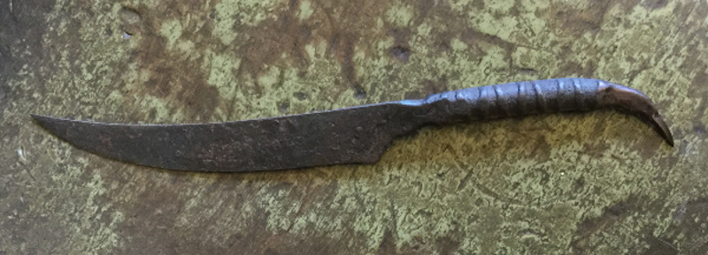

This was my first forged knife, made from a piece of rebar. It earned me an apprenticeship.

Work-In-Progress:
This is a file knife. It's common for bladesmiths to warm up by reforging an old broken file or some other piece of scrap. This one won't go through all the finishing processes of one of the custom knives, but it will eventually get heat-treated with a small batch of others like it and have a simple handle added.

Work-In-Progress:
This knife is a lot smaller than the others, and when it's done it will be a pendant knife that can be worn as jewelry. I'm happy with the basic design of the handle, but I'm going to re-cast it because there are a few details I want to change, and because there are a few process flaws I don't want to try to fix. When it's finished, the handle will have a two-tone patina of green for the leaves and vines with a brown background. The sheath will also be a casting, styled to look like a flower with partially open sides to show the blade, and a locking mechanism with a camouflaged release button.
Work-In-Progress:
This blade was made from a very high-quality steel and when polished will have a beautiful wavy heat-treat line. Handle materials are bone, maple burl, and antler tip. After everything is fitted and shaped, I'll add some carving and probably an oil finish.